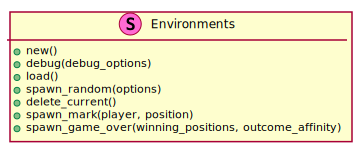
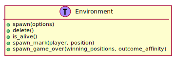
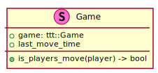
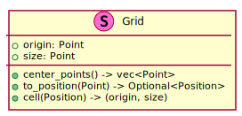

6.4. Components, Resources, and Entities¶
The game’s data is organized as components, resources, and entities. An entity represents a single object in the game. A component represents one aspect of an entity and store the data related to that aspect. Entities do not store any actual data but instead are associated with one or more components.
For example, a Pong type game might have a ball entity that is composed of a position component, sprint component and a ball component.
Resources store global data that is not specific to any one entity. For example, the score in a pong game is global to the entire game.
This section describes the notable components, resources, entities, and supporting types used in the game. Additional components, resources, and entities are created for environment specific features as needed.
6.4.1. Environments Resource¶
A major feature of FossXO is its many environments. Environments are responsible for managing required assets and spawning / destroying entities as the game progresses. This is similar responsibility as maps in other games.
The Environments resource is responsible for providing access and managing the all of the environments. Figure 6.6 shows the Environments resource.

Figure 6.6 Environments resource.¶
The methods of the of the Environments resource are described below.
- new
Creates the Environments resource.
- debug
Allows usage of the special debug environment. When the debug environment is enabled, grid lines, marks, and other annotations are drawn on top of the current environment.
- load
Loads assets required for all the environments.
- spawn_random
Spawns a random environment. If there is a current alive environment, it is deleted before the new environment is spawned. A shuffle short is used that ensures every environment is spawned once. The provided options include the current game state to show and if extraneous entities should be avoided.
- delete_current
Deletes the current environment and all its owned entities. This is useful when switching to the game menu.
- spawn_mark
Spawns a mark for the indicated player at the given position. This must be called after the game is updated to keep the environment state synchronized with the game.
- spawn_game_over
Spawns the game over related entities. The winning positions, if any, are provided. The outcome affinity is useful for single player games allowing environments to react to the player winning or losing. The neutral affinity is used or multiplayer games or cat’s games.
The Environments resource requires each environment to implement the Environment trait shown in Figure 6.7.

Figure 6.7 Environment trait.¶
The trait methods are:
- spawn
Spawns the initial set of entities for the environment using the provided options. This typically includes a background, grid, decorations, and initial set of marks if there is already a game in progress.
- delete
Deletes all entities from the environment.
- is_alive
Indicates if the environment is alive, that is has at least one entity.
- spawn_mark
Spawns a mark for the indicated player at the provided position.
- spawn_game_over
Spawns the game over related entities.
Warning
Many environments highlight or provide a special graphic for an available square the user is hovering over. This concept is not fully explored by the design proposed here. The debug environment can be used to explore this feature and reduce its risk.
6.4.2. Other Resources¶
In addition to environments, there are a other notable resources used by the game.
The game resource provides access to the underlying tic-tac-toe game logic and the last time a move was done on the game. Helper methods are provided to make tasks such as seeing if it is a given player’s turn. The game resource is shown in Figure 6.8.

Figure 6.8 Game resource.¶
The grid resource, shown in Figure 6.9 provides access to the grid and methods to convert between screen coordinates and tic-tac-toe positions.

Figure 6.9 Grid resource.¶
Additional conversion methods are added as needed to the grid resource.
6.4.3. Notable Components¶
There are several main components used by the game. These are shown in Figure 6.10.

Figure 6.10 Notable game components.¶
- Player
The Player component stores if the player is playing as X or as O.
- Mark
The Mark component indicates the owner of a given position on the board.
- Ai
The AI component provides the underlying AI opponent to use when selecting positions. Additionally, a delay can be specified to prevent the AI from instantly selecting a position.
6.4.4. Amethyst Provided Components¶
Amethyst provides several components that are used when building game entities. Some notable ones that are used by the game are listed below.
- Camera
Represents the game’s camera. Contains the projection matrix from world coordinates to screen coordinates.
- SpriteRender
Provides information for rendering a sprite.
- Transform
Stores local position, rotation, and scale.
See the Amethyst documentation for details about these components and their fields.